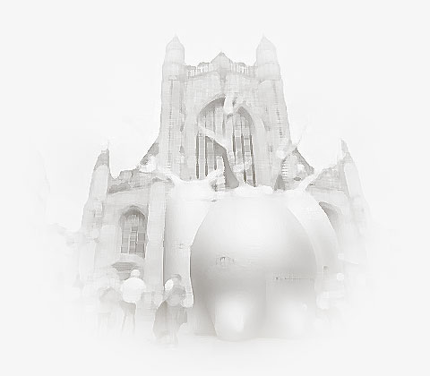

Jon Warmington
Forest Portals Project
-
Project Type
-
Role
-
Tools used
Illustrator, Photoshop,
Animate, Premiere, After Effects -
Finished Collaborated Materials
3-4 editted film and 5 animations
Augmented reality phone app
Video editor and animator
Link to finished materials
year 2016

INTRODUCTION TO PROJECT
The Forest Imagination Project was a unique immersive quest around the city of Bath via a phone
app that utilizes augmented reality. Participants are guided to select doors around Bath Abbey
that act as portals, offering them glimpses into real forests from all corners of the world.
Each portal combines the visual experience of both actual and imaginary spaces, bringing the
forests of the world to life in a way that is both captivating and educational.
Forest of Imagination
PROJECT TASKS
My primary task on this project was creating animations of illustrator Jessica Palmer's work,
which consisted of still images of backgrounds and mythical creatures. Using my expertise in
tweened animation techniques, I brought a number of these illustrations to life.
I was also responsible for editing video footage from the BBC Motion Gallery into short 30-40
second clips of different forests from around the world. I was able to arrange the footage in a
way that created compelling and visually stunning clips that captured the essence of each
forest.
In addition, I liaised with the team responsible for creating the phone app to ensure that all
materials were correctly reviewed, formatted, and prepared to ensure seamless integration into
the app.
Through my contributions to this project, I was able to bring a unique and dynamic element to
the final product, helping to create an immersive and captivating experience for all those who
engage with the app.